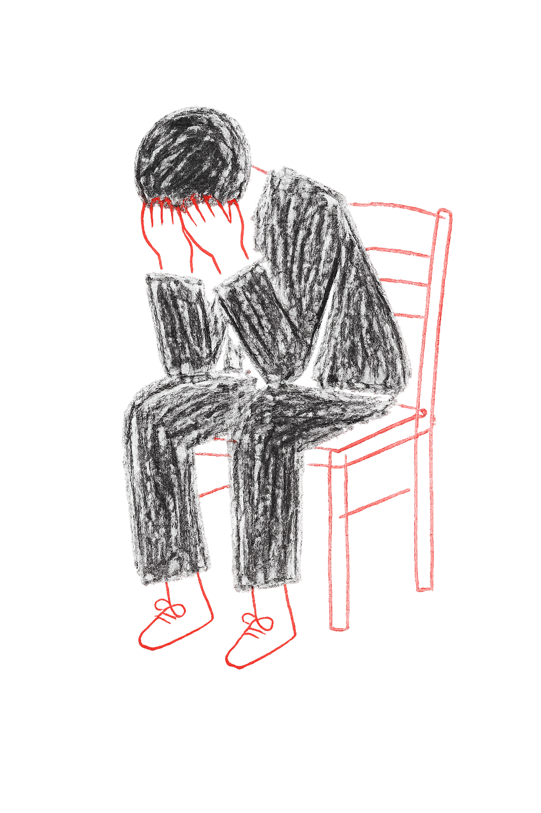

지금의
20대는
왜 우울한가

요즘 어둡고
답답해...
답답해...
우울이란?
"The opposite of depression is not happiness, but vitality"
우울증의 반대말은 행복이 아니라 '활력'이다.
우울은 근심스럽고 답답하며 활기가 없는 정신적 상태나 기분을 뜻한다. 슬픔, 무기력, 의욕 저하를 동반하여 일상생활과 생각 전반에 영향을 미치는 것이 특징이다.

대한민국 우울 실태
정신 및 행동장애
우울증
갈수록 더 우울해지는 한국인…우울증 환자 4년새 25% ↑
우울증과 정신질환을 앓는 국내 환자 수가 4년 전보다 20% 넘게 급증한 것으로 나타났다.
3일 국회 보건복지위원회 소속 최보윤 국민의힘 의원실이 건강보험심사평가원(심평원)을 통해 받은 '2021~2025년 우울증 및 정신질환 청구 현황'에 따르면 지난해 우리나라 우울증 환자 수는 113만8230명으로 2021년(91만785명) 대비 25% 급증했다.
같은 기간 조현병·정신지체 등을 포함한 정신 및 행동장애 환자 수는 360만2209명에서 432만8595명으로 20.2% 늘었다.